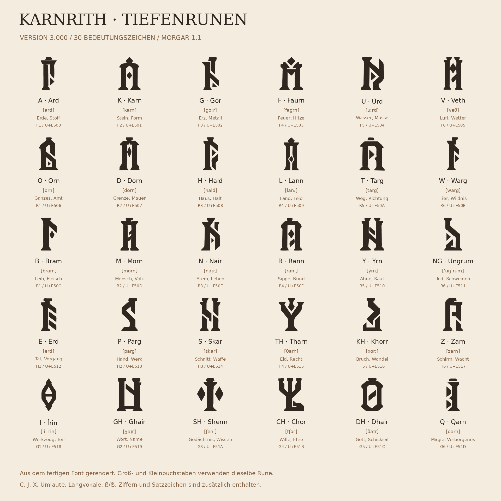

Morgar: Sprachbibel 1.1
Klangrevision für Erdi Kök · Karnrith Tiefenrunen 3.000 · 13. September 2026
Fassung und Bestand
Morgar ist die Sprache. Karnrith ist ihre Schrift. Diese Ausgabe setzt die Klangrevision zusammen mit der ausgewählten Schriftgestaltung II, Tiefenrunen, um. Der Font trägt Version 3.000; die Sprachbibel trägt Version 1.1.
Grundlage sind die vollständige Morgar-Sprachbibel 1.0 und Karnrith-Font-2.000.rar. Alle 30 Zeichenwurzeln, 12 Präfixe, 21 Suffixe, 100 Grundwörter und 200 Personennamen bleiben mit ihren Quellnummern erhalten. 40 Grundwörter und 24 Namen erhalten neue Schreibformen. Für sämtliche Wörter und Namen sind Sprechgliederung und IPA-Aussprache angegeben. Alte Formen und Bedeutungen stehen zum Vergleich daneben; geänderte Herleitungen sind markiert.
Anlass der Klangrevision
Der Bedeutungsbaukasten ist brauchbar. Als gesprochene Sprache bleibt er zu mechanisch: häufiges -or, harte Fugen, unklare Vokalfolgen und nahezu beliebige Lenierung. Ngrum beginnt mit der schwierigen Verbindung [ŋr], Yrngrum verdichtet das Problem, Yryr wiederholt denselben Lautkörper. Die Regel für dreifache Anfangskonsonanten löst diese konkreten Lautfolgen nicht.
Die Kopfregel wird stellenweise gebrochen. HAL+DHAIR bezeichnet nach dieser Regel eher eine hausbezogene Gottheit als ein Gotteshaus. Für Tempel ist DHAI+HALD stimmiger. SHEN+QARN endet auf Magie; für Zauberkunde passt das in der Quelle bereits vorhandene QAR+SHENN. THAR+SKAR benötigt eine Personenform, wenn ein Eidkrieger gemeint ist.
Bei den Namen wechseln -rena und die ausdrücklich festgelegte Form -renna. Die neue Tabelle vereinheitlicht das. Die Bedeutungsfolgen der Namen bleiben erhalten; ein Name ist ein Familienwunsch oder Beiname und kein nachträglich erfundenes Schicksal.
Klangrichtung
Der gälisch inspirierte Anteil liegt hier in vollen Vokalen, rollendem R und kontrollierten Reibelauten. Der nordisch inspirierte Anteil liegt in klarer Erstbetonung, kurzen schweren Stämmen und kräftigen Wortenden. Der gewünschte zwergische Tolkien-Eindruck entsteht durch gewichtige Konsonanten, innere Klangverwandtschaft und gebräuchliche Kurzformen. Das sind Gestaltungsziele dieser erfundenen Sprache, keine Behauptung über die Grammatik oder historische Aussprache realer gälischer oder nordischer Sprachen und keine Übernahme einer Khuzdul-Grammatik.
Starke Kerne wie Karn, Hald, Dorn, Bram, Skar und Tharn bleiben. Ein neues Wort wird nicht besser, nur weil mehr kh und Apostrophe darin stehen. Den Unterschied machen sprechbare Übergänge, ein wiedererkennbarer Rhythmus und wenige begründete Ausnahmeformen.
Aussprache
Die Hauptbetonung liegt auf der ersten Silbe. Die Lesespalte schreibt diese Silbe GROSS. Punkte trennen hörbare Silben, keine zusätzlichen Schriftzeichen. Die IPA-Spalte beschreibt die geplante Morgar-Aussprache.
a, e, i, o, u, y werden [a e i o u y] gesprochen. y ist ein ü-Laut. Unbetonte Vokale bleiben hörbar; ein geschriebenes e ist kein verschlucktes Schwa. á, é, í, ó, ú und ý bezeichnen lange Vokale. Der Akut bedeutet Länge, nicht Betonung. Neu festgelegt werden insbesondere Gór, Úrd und Írin. Im unbetonten zweiten Bestandteil kann ein langer Stammvokal gekürzt werden: Gór als Einzelwort, aber Faurgor als Berufsname. Solche Formen stehen im Wörterverzeichnis.
ai ist [aɪ̯], au ist [aʊ̯], ei ist [eɪ̯]. Es sind jeweils gleitende Doppellaute innerhalb einer Silbe. Andere aufeinandertreffende Vokale bleiben getrennt, solange keine ausdrücklich aufgeführte Kurzform gilt. So ist Fauryn FAUR·yn und Yrorn YR·orn.
r ist ein mit der Zungenspitze gerolltes [r]. s bleibt [s], z ist ein stimmhaftes [z] und kein deutsches tz. v ist [v], w ist [w]. k, g und q bleiben verschiedene Laute; q ist ein tiefer am Zäpfchen gebildeter Verschlusslaut [q].
kh = [x], wie der ch-Laut in Bach. gh = [ɣ], das stimmhafte Gegenstück. th = [θ], stimmlos mit der Zunge an den Zähnen; dh = [ð], die stimmhafte Form. sh = [ʃ], deutsches sch. ch = [tʃ], deutsches tsch. ng = [ŋ], ein einzelner Nasallaut. Im neuen Standard beginnt kein produktives Wort mehr mit ng+r. Ungrum spricht sich UNG·rum, ohne zusätzliches g.
Doppelte Konsonanten werden länger gehalten. Innerhalb einer Silbe markiert IPA das mit ː; über eine Silbengrenze steht zum Beispiel n.n. Rann [ranː] und Rannor [ˈran.nor] folgen demselben Prinzip. Es wird kein zusätzlicher Vokal zwischen die beiden Konsonanten gesetzt.
Silben, Fugen und Kurzformen
1. Grundformen bleiben V, VC, CV, CVC, CCVC und CVCC. Zwei Anfangskonsonanten sind vor allem in br, dr, gr, kr, pr, tr, sk und ähnlichen festgelegten Gruppen möglich. Ein Digraph wie th zählt als ein Laut. Ungrum löst den problematischen alten Beginn Ngrum durch einen vorgeschalteten Vokal auf. 2. Bei neuen Zusammensetzungen wird zuerst die aufgeführte Fugenform verwendet. Vor schwierigen Konsonantenfolgen darf ein kurzes a, vor der Werkzeugendung ein i eingefügt werden. Es ist ein Aussprachemittel ohne eigene Bedeutung und wird in der endgültigen Wortform mitgeschrieben. Die Tabelle zeigt die Entscheidungen für den jetzigen Bestand. 3. Die frühere freie Lenierung wird eingeschränkt. Schriftliche Normalformen wechseln nicht mehr spontan zwischen b/v, d/dh oder g/gh. Diese Unterschiede tragen bereits eigene Lautwerte. Lockerere Mundartformen können später separat beschrieben werden. 4. In der Veth-Familie werden th+h und th+th zu th zusammengezogen; th+ch wird ch und th+sk wird sk. Daraus entstehen Vethald, Vetharn, Vechor und Veskar. Andere Konsonanten werden nicht willkürlich gestrichen. 5. In der ausdrücklich erfassten Fuge SHEN+GOR entsteht lautlich Shengor, SHE·ngor [ˈʃe.ŋor]. Die ideographische Sinnfolge bleibt SH+G. Lautschrift und Sinnzeichenfolge sind zwei unterschiedliche Schreibweisen desselben Namens. 6. Gharon, Nairon, Dhairon und Qaron erhalten -on als historische Form der Personenendung nach einem r-haltigen Stamm. Das ist eine festgelegte Gruppe, keine automatische Ersetzung sämtlicher -or-Endungen. 7. Skor, Kargor und Faurgor sind gebräuchliche Kurzformen. Die älteren Vollformen bleiben als Herkunftsformen im Wörterbuch. Ein Sprecher muss nicht bei jedem Wort die vollständige Bedeutungsformel aussprechen. 8. Ardyn, Fauryn und Úrdyn verwenden eine verkürzte Form -yn aus Yrn in der Nahrungswortfamilie. Daraus wird kein neues universelles Suffix für beliebige Gegenstände.
Bedeutungszeichen sind keine gesprochenen Silben
Ein eingerahmtes Sinnzeichen kann weiterhin einen ganzen Stamm vertreten. Im laufenden Wort liefert es seinen Lautwert. Die Zeichenfolge K+G eines zweistämmigen Namens ist daher seine semantische Kurznotation, nicht die vollständige Buchstabenfolge des gesprochenen Namens Kargor.
Das ist entscheidend für den späteren Font: Er zeigt Zeichen an und bildet die festgelegten Lautverbindungen. Er soll weder automatisch Bedeutungen übersetzen noch Wortwurzeln raten. Insbesondere dürfen die geänderten Aussprachen nicht allein durch Font-Ligaturen simuliert werden.
Morgar [ˈmor.gar] bleibt als historisch zusammengezogener Sprachname erhalten. Karnrith [ˈkarn.riθ] bleibt als Schriftname erhalten. Die zweite Hälfte beginnt dort mit r; zwischen n und r wird kein zusätzlicher Vokal erzwungen.
Karnrith Tiefenrunen 3.000
Die gewählte Schrift verwendet hohe, massive Pfeilerformen, Keilfüße, schräg geschnittene Stege und offene Innenräume. Die ersten 18 Hauptformen stammen aus dem ausgewählten Bildentwurf. Zwölf weitere kanonische Formen und die technischen C-, J-, X- und ß-Formen wurden passend ergänzt. Eine zweite Ergänzung liefert zehn Ziffern und sechs häufige Sonderzeichen. Akzente und weitere technische Zeichen vervollständigen den Font.
Die fünf Klüfte und alle 30 Bedeutungsfelder bleiben erhalten. Die frühere starre 5×7-Matrix ist durch die neue Formensprache ersetzt. Sie war eine Konstruktionsvorschrift der alten Schrift und keine Bedeutungsregel der Sprache.
Im laufenden Text funktionieren NG, TH, KH, GH, SH, CH und DH als sieben OpenType-Doppelzeichen. Einzelnes T bleibt Targ, CH verwendet Chor, C allein ist ein ergänztes Tastaturzeichen. Ein Font übersetzt keine deutschen Sätze in Morgar. Für buchstabengetreuen deutschen Text gibt es die CSS-Klasse karnrith-text ohne automatische Doppelzeichen.
Neue direkt kodierte Karnrith-Runen liegen auf U+E500 bis U+E51D. Der frühere Bereich U+E300 bis U+E31D bleibt innerhalb der neuen Familie als Alias erhalten. Weil Rheunwaith diesen alten Bereich ebenfalls verwendet, müssen alte direkte Texte ihre Schriftfamilie mitführen. Die bereitgestellte Konvertierung ist nur für bekannte alte Karnrith-Texte bestimmt.
Die vollständige Zuordnung steht in alphabet.json; der gesamte Tastaturzeichensatz in zeichensatz.json. README.md beschreibt die Installation und HTML-Einbindung. Die beigefügten Zeichentafeln und Leseproben sind Renderings der tatsächlich ausgelieferten Fontdatei.
Alle 30 Zeichenwurzeln
| Code / Laut | Bisher | Version 1.1 | Fugenform | Aussprache | Bedeutung |
|---|---|---|---|---|---|
| F1 / A | Ard | Ard | ar- | [ard] | Erde, Stoff, Grund |
| F2 / K | Karn | Karn | kar- | [karn] | Stein, Form, Dauer |
| F3 / G | Gor | Gór | gór- | [goːr] | Erz, Metall, Wert |
| F4 / F | Faurn | Faurn | faur- | [faʊ̯rn] | Feuer, Hitze, Schmiede |
| F5 / U | Urd | Úrd | ur- | [uːrd] | Wasser, Masse, Fülle |
| F6 / V | Veth | Veth | veth- | [veθ] | Luft, Wetter, Bewegung |
| R1 / O | Orn | Orn | or- | [orn] | Ganzes, Amt, Träger |
| R2 / D | Dorn | Dorn | dor- | [dorn] | Grenze, Mauer, Trennung |
| R3 / H | Hald | Hald | hal- | [hald] | Haus, Halt, Obhut |
| R4 / L | Lann | Lann | lan- | [lanː] | Land, Feld, Gebiet |
| R5 / T | Targ | Targ | tar- | [targ] | Weg, Richtung, Reise |
| R6 / W | Warg | Warg | war- | [warg] | Tier, Wildnis, Herde |
| B1 / B | Bram | Bram | bra- | [bram] | Leib, Fleisch, Gewicht |
| B2 / M | Morn | Morn | mor- | [morn] | Mensch, Volk, Arbeit |
| B3 / N | Nair | Nair | nai- | [naɪ̯r] | Atem, Leben, Stimme |
| B4 / R | Rann | Rann | ran- | [ranː] | Sippe, Bund, Versammlung |
| B5 / Y | Yrn | Yrn | yr- | [yrn] | Ahne, Saat, Fortgang |
| B6 / NG | Ngrum | Ungrum | ungr- | [ˈuŋ.rum] | Tod, Schweigen, Ruhe |
| H1 / E | Erd | Erd | er- | [erd] | Tat, Vorgang, Tausch |
| H2 / P | Parg | Parg | par- | [parg] | Hand, Werk, Machen |
| H3 / S | Skar | Skar | skar- | [skar] | Schnitt, Waffe, Streit |
| H4 / TH | Tharn | Tharn | thar- | [θarn] | Eid, Recht, Bindung |
| H5 / KH | Khorr | Khorr | khor- | [xorː] | Bruch, Wandel, Prüfung |
| H6 / Z | Zarn | Zarn | zar- | [zarn] | Schirm, Wacht, Erhalt |
| G1 / I | Irin | Írin | ír- | [ˈiː.rin] | Werkzeug, Teil, Genauigkeit |
| G2 / GH | Ghair | Ghair | ghar- | [ɣaɪ̯r] | Wort, Name, Wahrheit |
| G3 / SH | Shenn | Shenn | shen- | [ʃenː] | Gedächtnis, Wissen, Erzählung |
| G4 / CH | Chor | Chor | chor- | [tʃor] | Wille, Ehre, Absicht |
| G5 / DH | Dhair | Dhair | dhai- | [ðaɪ̯r] | Gott, Schicksal, Jenseits |
| G6 / Q | Qarn | Qarn | qar- | [qarn] | Magie, Verborgenes, Geist |
Alle 33 Affixe
Die IPA-Werte geben das Affix isoliert wieder. Im vollständigen Wort bleibt es in der Regel unbetont.
| Bisher | Version 1.1 | Lautwert | Bedeutung |
|---|---|---|---|
| ur- | úr- | [uːr] | groß, hoch, zahlreich |
| dun- | dun- | [dun] | klein, nieder, nachgeordnet |
| an- | an- | [an] | ohne, un-, entzogen |
| bar- | bar- | [bar] | oben, über, hochgelegen |
| dur- | dur- | [dur] | unten, tief, unterirdisch |
| inn- | inn- | [inː] | innen, innerhalb |
| dor- | dor- | [dor] | außen, Rand, Grenze |
| ein- | ein- | [eɪ̯n] | einzeln, einzig |
| dra- | dra- | [dra] | drei, vollständige Gruppe |
| sam- | sam- | [sam] | zusammen, gemeinsam |
| fyr- | fyr- | [fyr] | voran, erster, voraus |
| ath- | ath- | [aθ] | danach, hinter, letzter |
| -ar | -ar | [ar] | Gegenstand oder Stoff |
| -er | -er | [er] | Handlung oder Verb |
| -ir | -ir | [ir] | Werkzeug, Teil, präzises Ding |
| -or | -or | [or] | Person, Träger, Amt |
| -ur | -ur | [ur] | Menge, Kollektiv, Gebiet |
| -yr | -yr | [yr] | Ahnisches, ererbtes oder geweihtes Ding |
| -en | -en | [en] | zugehörig, aus, von |
| -in | -in | [in] | hervorgegangen aus, Nachkomme |
| -ath | -ath | [aθ] | Ort, Stelle, Platz |
| -dorn | -dorn | [dorn] | ummauerter oder geschiedener Ort |
| -hald | -hald | [hald] | Haus, Halle, bewahrter Raum |
| -lann | -lann | [lanː] | Land, Flur, Herrschaftsraum |
| -rann | -rann | [ranː] | Sippe, Bund, versammelte Gruppe |
| -targ | -targ | [targ] | Weg, Zug, gerichtete Folge |
| -tharn | -tharn | [θarn] | Eid, Recht, bindende Ordnung |
| -zarn | -zarn | [zarn] | Wacht, Schutz, Erhalt |
| -ghair | -ghair | [ɣaɪ̯r] | Wort, Name, verkündeter Text |
| -shenn | -shenn | [ʃenː] | Lehre, Erinnerung, geordnetes Wissen |
| -chor | -chor | [tʃor] | Würde, Wille, Ehre |
| -ngrum | -ungrum | [ˈuŋ.rum] | Tod, Ruhe, Grabzustand |
| -rith | -rith | [riθ] | geritztes Zeichen oder Inschrift |
Alle 100 Grundwörter
= beibehalten, L Vokallänge, F Fugenform, M Ableitung, K gebräuchliche Kurzform, D Lautentähnlichung, U Anlautvokal, B neue oder korrigierte Bildung.
| Nr. | Bisher | Version 1.1 | Sprechgliederung | IPA | Deutsch | Art |
|---|---|---|---|---|---|---|
| 1 | Ortharn | Ortharn | OR·tharn | [ˈor.θarn] | Herrscher; König oder Königin im neutralen Amtssinn | = |
| 2 | Ortharna | Ortharna | OR·thar·na | [ˈor.θar.na] | Königin | = |
| 3 | Urortharn | Úrortharn | ÚR·or·tharn | [ˈuːr.or.θarn] | Hochkönig; Oberkönig | L |
| 4 | Ranorn | Rannor | RAN·nor | [ˈran.nor] | Sippenführer; Clanoberhaupt | M |
| 5 | Lanorn | Lannor | LAN·nor | [ˈlan.nor] | Grundherr; Landherr | M |
| 6 | Halorn | Haldor | HAL·dor | [ˈhal.dor] | Haushofmeister; Verwalter einer Halle | M |
| 7 | Mororn | Mornor | MOR·nor | [ˈmor.nor] | Amtmann; öffentlicher Verwalter | M |
| 8 | Zarnor | Zarnor | ZAR·nor | [ˈzar.nor] | Vogt; Wächter mit Rechtsgewalt | = |
| 9 | Tharn | Tharn | THARN | [θarn] | Eid; Gesetz; verbindliche Pflicht | = |
| 10 | Tharghair | Tharghair | THAR·ghair | [ˈθar.ɣaɪ̯r] | Erlass; verkündeter Gesetzestext | = |
| 11 | Tharnor | Tharnor | THAR·nor | [ˈθar.nor] | Richter | = |
| 12 | Tharner | Tharner | THAR·ner | [ˈθar.ner] | richten; urteilen; Recht sprechen | = |
| 13 | Dortharn | Dortharn | DOR·tharn | [ˈdor.θarn] | Grenzrecht; Recht zwischen Herrschaften | = |
| 14 | Lantharn | Lantharn | LAN·tharn | [ˈlan.θarn] | Landrecht; Besitzordnung | = |
| 15 | Rantharn | Rantharn | RAN·tharn | [ˈran.θarn] | Sippeneid; Treuebund | = |
| 16 | Orghair | Orghair | OR·ghair | [ˈor.ɣaɪ̯r] | Titel; offizielle Amtsbezeichnung | = |
| 17 | Morrann | Morrann | MOR·rann | [ˈmor.ranː] | Rat; Volksversammlung | = |
| 18 | Ard | Ard | ARD | [ard] | Erde; Boden; fester Untergrund | = |
| 19 | Karn | Karn | KARN | [karn] | Stein; Felsblock | = |
| 20 | Barkarn | Barkarn | BAR·karn | [ˈbar.karn] | Berg; Felsmassiv | = |
| 21 | Durkarn | Durkarn | DUR·karn | [ˈdur.karn] | Höhle; Kaverne | = |
| 22 | Urd | Úrd | ÚRD | [uːrd] | Wasser; größere Flüssigkeitsmenge | L |
| 23 | Urdtarg | Úrtarg | ÚR·targ | [ˈuːr.targ] | Bach; Flusslauf; Wasserstraße | F |
| 24 | Hald | Hald | HALD | [hald] | Haus; Heim; Schutzraum | = |
| 25 | Halur | Haldur | HAL·dur | [ˈhal.dur] | Dorf; Siedlung | M |
| 26 | Urhald | Úrhald | ÚR·hald | [ˈuːr.hald] | Große Halle; Versammlungshalle | L |
| 27 | Karhald | Karhald | KAR·hald | [ˈkar.hald] | Steinhalle; festes Langhaus | = |
| 28 | Dorhald | Dorhald | DOR·hald | [ˈdor.hald] | Burg; Festung | = |
| 29 | Lann | Lann | LANN | [lanː] | Land; Feld; Flur | = |
| 30 | Lanur | Lannur | LAN·nur | [ˈlan.nur] | Reich; Herrschaftsgebiet | M |
| 31 | Lannath | Lannath | LAN·nath | [ˈlan.naθ] | Hofgut; Gutshof; Landbesitz | = |
| 32 | Durlann | Durlann | DUR·lann | [ˈdur.lanː] | Tal; Senke | = |
| 33 | Dortarg | Dortarg | DOR·targ | [ˈdor.targ] | Pass; bewachter Übergang | = |
| 34 | Gorath | Górath | GÓ·rath | [ˈgoː.raθ] | Mine; Bergwerk | L |
| 35 | Skar | Skar | SKAR | [skar] | Kampf; Schneide; bewaffneter Streit | = |
| 36 | Skarir | Skarir | SKA·rir | [ˈska.rir] | Klinge; Schwert | = |
| 37 | Khorir | Khorir | KHO·rir | [ˈxo.rir] | Kriegshammer; Streithacke | = |
| 38 | Zarnir | Zarnir | ZAR·nir | [ˈzar.nir] | Schild | = |
| 39 | Zarbram | Górbram | GÓR·bram | [ˈgoːr.bram] | Rüstung; Harnisch | B |
| 40 | Dorzarn | Dorzarn | DOR·zarn | [ˈdor.zarn] | Grenzwacht; Wachposten | = |
| 41 | Karzarn | Karzarn | KAR·zarn | [ˈkar.zarn] | Wall; Brustwehr; Bollwerk | = |
| 42 | Skaror | Skor | SKOR | [skor] | Krieger | K |
| 43 | Warskar | Warskar | WAR·skar | [ˈwar.skar] | Jagdspieß; Speer | = |
| 44 | Tharskar | Tharskor | THAR·skor | [ˈθar.skor] | Eidkrieger; Ritter im morgornischen Sinn | B |
| 45 | Urzarn | Úrzarn | ÚR·zarn | [ˈuːr.zarn] | Heer; bewaffneter Aufgebotsverband | L |
| 46 | Skartarg | Skartarg | SKAR·targ | [ˈskar.targ] | Feldzug; Heeresmarsch | = |
| 47 | Khordorn | Khordorn | KHOR·dorn | [ˈxor.dorn] | Bresche | = |
| 48 | Dorskar | Dorskar | DOR·skar | [ˈdor.skar] | Überfall; Grenzraubzug | = |
| 49 | Gorir | Górir | GÓ·rir | [ˈgoː.rir] | Axt; metallene Hiebwaffe | L |
| 50 | Vethskar | Veskar | VE·skar | [ˈve.skar] | Pfeil; leichter Wurfspeer | F |
| 51 | Parger | Parger | PAR·ger | [ˈpar.ger] | arbeiten; fertigen; bauen | = |
| 52 | Pargir | Pargir | PAR·gir | [ˈpar.gir] | Werkzeug; Handwerksgerät | = |
| 53 | Pargor | Pargor | PAR·gor | [ˈpar.gor] | Handwerker | = |
| 54 | Karpargor | Kargor | KAR·gor | [ˈkar.gor] | Steinmetz; Maurer | K |
| 55 | Faurpargor | Faurgor | FAUR·gor | [ˈfaʊ̯r.gor] | Schmied | K |
| 56 | Gorer | Górer | GÓ·rer | [ˈgoː.rer] | schürfen; abbauen | L |
| 57 | Goror | Górin | GÓ·rin | [ˈgoː.rin] | Bergmann; Erzsucher | B |
| 58 | Gorurd | Górurd | GÓR·urd | [ˈgoːr.urd] | Erzvorrat; Metalllager | L |
| 59 | Faurath | Faurath | FAU·rath | [ˈfaʊ̯.raθ] | Schmiede; Esse | = |
| 60 | Faurir | Faurir | FAU·rir | [ˈfaʊ̯.rir] | Ofen; Schmelztiegel | = |
| 61 | Erd | Erd | ERD | [erd] | Handel; Tausch; geschuldete Leistung | = |
| 62 | Erdor | Erdor | ER·dor | [ˈer.dor] | Händler | = |
| 63 | Erdir | Erdir | ER·dir | [ˈer.dir] | Münze; Gewichtsstück; Wertmaß | = |
| 64 | Karnath | Karnath | KAR·nath | [ˈkar.naθ] | Steinbruch | = |
| 65 | Erdath | Erdath | ER·dath | [ˈer.daθ] | Markt; Handelsplatz | = |
| 66 | Morn | Morn | MORN | [morn] | Mensch; Gemeiner; Angehöriger des Volkes | = |
| 67 | Morur | Mornur | MOR·nur | [ˈmor.nur] | Bevölkerung; Volk | M |
| 68 | Rann | Rann | RANN | [ranː] | Sippe; Clan; Gefolgschaft | = |
| 69 | Halrann | Halrann | HAL·rann | [ˈhal.ranː] | Hausgemeinschaft; Familie | = |
| 70 | Yrn | Yrn | YRN | [yrn] | Kind; Keim; Erbe | = |
| 71 | Yrnor | Yrnor | YR·nor | [ˈyr.nor] | Elternteil; Erzeuger oder Gebärende | = |
| 72 | Yryr | Yrorn | YR·orn | [ˈyr.orn] | Vorfahr; Ahne | B |
| 73 | Rannir | Rannir | RAN·nir | [ˈran.nir] | Geschwister; naher Sippenverwandter | = |
| 74 | Bram | Bram | BRAM | [bram] | Körper; Fleisch; körperliche Kraft | = |
| 75 | Nair | Nair | NAIR | [naɪ̯r] | Leben; Atem; Gesundheit | = |
| 76 | Nairor | Nairon | NAI·ron | [ˈnaɪ̯.ron] | Heiler; Wundkundiger | D |
| 77 | Ghair | Ghair | GHAIR | [ɣaɪ̯r] | Wort; Name; Zeugnis | = |
| 78 | Gharor | Gharon | GHA·ron | [ˈɣa.ron] | Herold; Sprecher; Bote | D |
| 79 | Shenor | Shennor | SHEN·nor | [ˈʃen.nor] | Chronist; Lehrmeister; Skaldenkundiger | M |
| 80 | Chor | Chor | CHOR | [tʃor] | Ehre; Ruf; Entschlossenheit | = |
| 81 | Ardyrn | Ardyn | AR·dyn | [ˈar.dyn] | Korn; Getreide | F |
| 82 | Fauryrn | Fauryn | FAUR·yn | [ˈfaʊ̯r.yn] | Brot; Fladen | F |
| 83 | Wargur | Wargur | WAR·gur | [ˈwar.gur] | Herde; Nutzvieh | = |
| 84 | Urdyrn | Úrdyn | ÚR·dyn | [ˈuːr.dyn] | Ale; vergorenes Getreidegetränk | F |
| 85 | Bramzarn | Bramzarn | BRAM·zarn | [ˈbram.zarn] | Kleidung; Mantel; wetterfeste Hülle | = |
| 86 | Dhair | Dhair | DHAIR | [ðaɪ̯r] | Gottheit; Schicksal; das Heilige | = |
| 87 | Dhairor | Dhairon | DHAI·ron | [ˈðaɪ̯.ron] | Gott; Göttin; Schicksalsmacht | D |
| 88 | Haldhair | Dhaihald | DHAI·hald | [ˈðaɪ̯.hald] | Tempel; Heiligtum | B |
| 89 | Dhairghair | Dhaighair | DHAI·ghair | [ˈðaɪ̯.ɣaɪ̯r] | Gebet; Anrufung | F |
| 90 | Dhairtharn | Dhaitharn | DHAI·tharn | [ˈðaɪ̯.θarn] | heiliger Schwur; Tabugebot | F |
| 91 | Qarn | Qarn | QARN | [qarn] | Magie; Geistkraft; Geheimnis | = |
| 92 | Qarer | Qarer | QA·rer | [ˈqa.rer] | zaubern; Magie ausüben | = |
| 93 | Qarir | Qarir | QA·rir | [ˈqa.rir] | Zauberzeichen; Talisman; Rune im magischen Sinn | = |
| 94 | Qaror | Qaron | QA·ron | [ˈqa.ron] | Magier; Zauberkundiger | D |
| 95 | Gharqarn | Gharqarn | GHAR·qarn | [ˈɣar.qarn] | Namenszauber; Bindung durch Benennung | = |
| 96 | Shenqarn | Qarshenn | QAR·shenn | [ˈqar.ʃenː] | Zauberkunde; okkulte Lehre | B |
| 97 | Ngrum | Ungrum | UNG·rum | [ˈuŋ.rum] | Tod; Totenruhe | U |
| 98 | Ngrumath | Ungrumath | UNG·ru·math | [ˈuŋ.ru.maθ] | Grab; Gruft | U |
| 99 | Ngrumor | Ungrumor | UNG·ru·mor | [ˈuŋ.ru.mor] | Verstorbener; geehrter Toter | U |
| 100 | Yrngrum | Yrungrum | YR·ung·rum | [ˈyr.uŋ.rum] | Ahnengruft; Familiengrab | U |
Begründungen der geänderten Wörter
| Nr. | Wort | Neue Herleitung | Begründung |
|---|---|---|---|
| 3 | Úrortharn | ÚR- + ORTHARN | Langes ú im steigernden Präfix; Urortharn bleibt eine zulässige ältere Schreibweise. |
| 4 | Rannor | RANN + -OR | Personenableitung vom vollen Stamm; die schwere Folge -norn wird zu -nnor umgebildet. |
| 5 | Lannor | LANN + -OR | Parallel zu Rannor; Person des Landes. |
| 6 | Haldor | HALD + -OR | Volle Stammform und klare Ableitung: Verwalter des Hauses. |
| 7 | Mornor | MORN + -OR | Volle Stammform statt der wiederholten Folge mor-or-. |
| 22 | Úrd | URD | Vokallänge ausdrücklich geschrieben; Grundbedeutung und Wortbau bleiben erhalten. |
| 23 | Úrtarg | UR- < ÚRD + TARG | Der kurze Fugenstamm ur- ersetzt urd- vor t; die Betonung bewahrt das lange ú. |
| 25 | Haldur | HALD + -UR | Das Kollektivsuffix wird an den vollen Hausstamm angeschlossen. |
| 26 | Úrhald | UR- + HALD | Vokallänge ausdrücklich geschrieben; Grundbedeutung und Wortbau bleiben erhalten. |
| 30 | Lannur | LANN + -UR | Voller Landstamm; nn bleibt als gehaltener Laut erkennbar. |
| 34 | Górath | GOR + -ATH | Vokallänge ausdrücklich geschrieben; Grundbedeutung und Wortbau bleiben erhalten. |
| 39 | Górbram | GÓR + BRAM | Metallleib als festes Bild für Harnisch. Vermeidet den widersprüchlichen Kopf in Zarbram und trennt Rüstung vom allgemeinen Leibschutz Bramzarn. |
| 42 | Skor | SKAR + -OR > SKAROR > SKOR | Lexikalisierte Kurzform für Krieger; keine allgemeine Tilgung von ar in jedem Wort. |
| 44 | Tharskor | THAR- + SKOR | Eid + Krieger. Die neue Form benennt eindeutig eine Person. |
| 45 | Úrzarn | UR- + ZARN | Vokallänge ausdrücklich geschrieben; Grundbedeutung und Wortbau bleiben erhalten. |
| 49 | Górir | GOR + -IR | Vokallänge ausdrücklich geschrieben; Grundbedeutung und Wortbau bleiben erhalten. |
| 50 | Veskar | VETH + SKAR > VESKAR | In dieser Wortfamilie vereinfacht sich th + sk zu sk. |
| 54 | Kargor | KAR + PARG + -OR > KAR-PARGOR > KARGOR | Häufige Berufsbezeichnung mit historisch verkürztem Mittelteil; Pargor bleibt als selbständiges Wort erhalten. |
| 55 | Faurgor | FAUR + PARG + -OR > FAUR-PARGOR > FAURGOR | Wie Kargor: die häufige Berufsbezeichnung erhält eine feste Kurzform. |
| 56 | Górer | GOR + -ER | Vokallänge ausdrücklich geschrieben; Grundbedeutung und Wortbau bleiben erhalten. |
| 57 | Górin | GÓR + -IN | Erzgeborener als beruflicher Beiname des Bergmanns. Eine bewusste neue Wortbildung; -in wird dadurch nicht allgemein zu einem Berufssuffix. |
| 58 | Górurd | GOR + URD | Vokallänge ausdrücklich geschrieben; Grundbedeutung und Wortbau bleiben erhalten. |
| 67 | Mornur | MORN + -UR | Voller Volksstamm statt mor-ur-. |
| 72 | Yrorn | YR- + ORN | Ahnenträger statt der repetitiven Form Yryr. Gegenüber Yrnor für Elternteil bleibt Yrorn der weiter zurückliegende Vorfahr. |
| 76 | Nairon | NAIR + -OR > NAIROR > NAIRON | Die Wiederholung r...r wird in dieser häufigen Personenbezeichnung zu r...n entähnlicht. |
| 78 | Gharon | GHAR + -OR > GHAROR > GHARON | Die gleiche festgeschriebene Entähnlichung wie in Nairon. |
| 79 | Shennor | SHENN + -OR | Voller Wissensstamm; nn wird gehalten. |
| 81 | Ardyn | ARD + YRN > ARDYN | In der kleinen Nahrungswortfamilie wird -yrn zu -yn verkürzt. |
| 82 | Fauryn | FAUR + YRN > FAURYN | Gleiche Nahrungsform -yn; beide Vokalkerne bleiben hörbar. |
| 84 | Úrdyn | ÚRD + YRN > ÚRDYN | Gleiche Nahrungsform -yn für das vergorene Getreidegetränk. |
| 87 | Dhairon | DHAIR + -OR > DHAIROR > DHAIRON | Festgeschriebene Entähnlichung r...r zu r...n. |
| 88 | Dhaihald | DHAI- + HALD | Gottheits-Haus. Korrigiert die Stellung des Hauptstamms: Das Wort bezeichnet ein Hald. |
| 89 | Dhaighair | DHAI- + GHAIR | Der bereits vorhandene Fugenstamm dhai- ersetzt den unnötig schweren Vollstamm. |
| 90 | Dhaitharn | DHAI- + THARN | Gleicher Fugenstamm dhai- vor dem Rechtsstamm. |
| 94 | Qaron | QAR + -OR > QAROR > QARON | Festgeschriebene Entähnlichung wie in Gharon; Qarn behält seinen eigenen Laut q. |
| 96 | Qarshenn | QAR- + SHENN | Magie-Wissen. Diese Bildung steht bereits als Qarshenn in der Affixliste der Quelle; sie entspricht der Bedeutung Zauberkunde. |
| 97 | Ungrum | U + NGRUM > UNGRUM | Ein Anlautvokal löst den schwer sprechbaren Wortbeginn ŋr auf. Der Vokal ist lautlich, kein neuer Bedeutungsstamm. |
| 98 | Ungrumath | UNGRUM + -ATH | Die neue Stammform gilt auch für die Ableitung Grab. |
| 99 | Ungrumor | UNGRUM + -OR | Die neue Stammform gilt auch für Verstorbener. |
| 100 | Yrungrum | YR- + UNGRUM | Beide Stämme bleiben hörbar; drei klare Silben statt des dichten Beginns yrngr-. |
100 Namen: männlich
| Nr. | Bisher | Version 1.1 | Sprechgliederung | IPA | Sinnfolge / Bedeutung |
|---|---|---|---|---|---|
| 1 | Arkarn | Arkarn | AR·karn | [ˈar.karn] | A + K / Grund, Festigkeit + Stein, Ausdauer |
| 2 | Arhald | Arhald | AR·hald | [ˈar.hald] | A + H / Grund, Festigkeit + Haus, Schutz |
| 3 | Arran | Arran | AR·ran | [ˈar.ran] | A + R / Grund, Festigkeit + Sippe, Treue |
| 4 | Artharn | Artharn | AR·tharn | [ˈar.θarn] | A + TH / Grund, Festigkeit + Eid, Recht |
| 5 | Archor | Archor | AR·chor | [ˈar.tʃor] | A + CH / Grund, Festigkeit + Wille, Ehre |
| 6 | Kartarg | Kartarg | KAR·targ | [ˈkar.targ] | K + T / Stein, Ausdauer + Weg, Ziel |
| 7 | Karskar | Karskar | KAR·skar | [ˈkar.skar] | K + S / Stein, Ausdauer + Kampf, Entschlossenheit |
| 8 | Karzarn | Karzarn | KAR·zarn | [ˈkar.zarn] | K + Z / Stein, Ausdauer + Wacht, Erhalt |
| 9 | Karorn | Karorn | KAR·orn | [ˈkar.orn] | K + O / Stein, Ausdauer + Amt, Ganzheit |
| 10 | Kargor | Kargor | KAR·gor | [ˈkar.gor] | K + G / Stein, Ausdauer + Erz, Wert |
| 11 | Gortharn | Górtharn | GÓR·tharn | [ˈgoːr.θarn] | G + TH / Erz, innerer Wert + Eid, Recht |
| 12 | Gorchor | Górchor | GÓR·chor | [ˈgoːr.tʃor] | G + CH / Erz, innerer Wert + Wille, Ehre |
| 13 | Gorkarn | Górkarn | GÓR·karn | [ˈgoːr.karn] | G + K / Erz, innerer Wert + Stein, Ausdauer |
| 14 | Gorhald | Górhald | GÓR·hald | [ˈgoːr.hald] | G + H / Erz, innerer Wert + Haus, Schutz |
| 15 | Gorran | Górran | GÓR·ran | [ˈgoːr.ran] | G + R / Erz, innerer Wert + Sippe, Treue |
| 16 | Faurorn | Faurorn | FAUR·orn | [ˈfaʊ̯r.orn] | F + O / Feuer, Schmiedekraft + Amt, Ganzheit |
| 17 | Faurgor | Faurgor | FAUR·gor | [ˈfaʊ̯r.gor] | F + G / Feuer, Schmiedekraft + Erz, Wert |
| 18 | Faurtarg | Faurtarg | FAUR·targ | [ˈfaʊ̯r.targ] | F + T / Feuer, Schmiedekraft + Weg, Ziel |
| 19 | Faurskar | Faurskar | FAUR·skar | [ˈfaʊ̯r.skar] | F + S / Feuer, Schmiedekraft + Kampf, Entschlossenheit |
| 20 | Faurzarn | Faurzarn | FAUR·zarn | [ˈfaʊ̯r.zarn] | F + Z / Feuer, Schmiedekraft + Wacht, Erhalt |
| 21 | Vethhald | Vethal | VE·thal | [ˈve.θal] | V + H / Wind, Bewegung + Haus, Schutz |
| 22 | Vethran | Vethran | VETH·ran | [ˈveθ.ran] | V + R / Wind, Bewegung + Sippe, Treue |
| 23 | Vetharn | Vetharn | VE·tharn | [ˈve.θarn] | V + TH / Wind, Bewegung + Eid, Recht |
| 24 | Vethchor | Vechor | VE·chor | [ˈve.tʃor] | V + CH / Wind, Bewegung + Wille, Ehre |
| 25 | Vethkarn | Vethkarn | VETH·karn | [ˈveθ.karn] | V + K / Wind, Bewegung + Stein, Ausdauer |
| 26 | Orskar | Orskar | OR·skar | [ˈor.skar] | O + S / Amt, Ganzheit + Kampf, Entschlossenheit |
| 27 | Orzarn | Orzarn | OR·zarn | [ˈor.zarn] | O + Z / Amt, Ganzheit + Wacht, Erhalt |
| 28 | Orgor | Orgor | OR·gor | [ˈor.gor] | O + G / Amt, Ganzheit + Erz, Wert |
| 29 | Ortarg | Ortarg | OR·targ | [ˈor.targ] | O + T / Amt, Ganzheit + Weg, Ziel |
| 30 | Orkarn | Orkarn | OR·karn | [ˈor.karn] | O + K / Amt, Ganzheit + Stein, Ausdauer |
| 31 | Dorchor | Dorchor | DOR·chor | [ˈdor.tʃor] | D + CH / Grenze, Schutz + Wille, Ehre |
| 32 | Dorkarn | Dorkarn | DOR·karn | [ˈdor.karn] | D + K / Grenze, Schutz + Stein, Ausdauer |
| 33 | Dorhald | Dorhald | DOR·hald | [ˈdor.hald] | D + H / Grenze, Schutz + Haus, Schutz |
| 34 | Dorran | Dorran | DOR·ran | [ˈdor.ran] | D + R / Grenze, Schutz + Sippe, Treue |
| 35 | Dortharn | Dortharn | DOR·tharn | [ˈdor.θarn] | D + TH / Grenze, Schutz + Eid, Recht |
| 36 | Halgor | Halgor | HAL·gor | [ˈhal.gor] | H + G / Haus, Obhut + Erz, Wert |
| 37 | Haltarg | Haltarg | HAL·targ | [ˈhal.targ] | H + T / Haus, Obhut + Weg, Ziel |
| 38 | Halskar | Halskar | HAL·skar | [ˈhal.skar] | H + S / Haus, Obhut + Kampf, Entschlossenheit |
| 39 | Halzarn | Halzarn | HAL·zarn | [ˈhal.zarn] | H + Z / Haus, Obhut + Wacht, Erhalt |
| 40 | Halorn | Halorn | HAL·orn | [ˈhal.orn] | H + O / Haus, Obhut + Amt, Ganzheit |
| 41 | Lanran | Lanran | LAN·ran | [ˈlan.ran] | L + R / Land, Besitz + Sippe, Treue |
| 42 | Lantharn | Lantharn | LAN·tharn | [ˈlan.θarn] | L + TH / Land, Besitz + Eid, Recht |
| 43 | Lanchor | Lanchor | LAN·chor | [ˈlan.tʃor] | L + CH / Land, Besitz + Wille, Ehre |
| 44 | Lankarn | Lankarn | LAN·karn | [ˈlan.karn] | L + K / Land, Besitz + Stein, Ausdauer |
| 45 | Lanhald | Lanhald | LAN·hald | [ˈlan.hald] | L + H / Land, Besitz + Haus, Schutz |
| 46 | Tarzarn | Tarzarn | TAR·zarn | [ˈtar.zarn] | T + Z / Weg, Ziel + Wacht, Erhalt |
| 47 | Tarorn | Tarorn | TAR·orn | [ˈtar.orn] | T + O / Weg, Ziel + Amt, Ganzheit |
| 48 | Targor | Targor | TAR·gor | [ˈtar.gor] | T + G / Weg, Ziel + Erz, Wert |
| 49 | Tarskar | Tarskar | TAR·skar | [ˈtar.skar] | T + S / Weg, Ziel + Kampf, Entschlossenheit |
| 50 | Tarkarn | Tarkarn | TAR·karn | [ˈtar.karn] | T + K / Weg, Ziel + Stein, Ausdauer |
| 51 | Warkarn | Warkarn | WAR·karn | [ˈwar.karn] | W + K / Wildnis, Tierkraft + Stein, Ausdauer |
| 52 | Warhald | Warhald | WAR·hald | [ˈwar.hald] | W + H / Wildnis, Tierkraft + Haus, Schutz |
| 53 | Warran | Warran | WAR·ran | [ˈwar.ran] | W + R / Wildnis, Tierkraft + Sippe, Treue |
| 54 | Wartharn | Wartharn | WAR·tharn | [ˈwar.θarn] | W + TH / Wildnis, Tierkraft + Eid, Recht |
| 55 | Warchor | Warchor | WAR·chor | [ˈwar.tʃor] | W + CH / Wildnis, Tierkraft + Wille, Ehre |
| 56 | Bratarg | Bratarg | BRA·targ | [ˈbra.targ] | B + T / Leib, Stärke + Weg, Ziel |
| 57 | Braskar | Braskar | BRA·skar | [ˈbra.skar] | B + S / Leib, Stärke + Kampf, Entschlossenheit |
| 58 | Brazarn | Brazarn | BRA·zarn | [ˈbra.zarn] | B + Z / Leib, Stärke + Wacht, Erhalt |
| 59 | Braorn | Braorn | BRA·orn | [ˈbra.orn] | B + O / Leib, Stärke + Amt, Ganzheit |
| 60 | Bragor | Bragor | BRA·gor | [ˈbra.gor] | B + G / Leib, Stärke + Erz, Wert |
| 61 | Mortharn | Mortharn | MOR·tharn | [ˈmor.θarn] | M + TH / Volk, Arbeit + Eid, Recht |
| 62 | Morchor | Morchor | MOR·chor | [ˈmor.tʃor] | M + CH / Volk, Arbeit + Wille, Ehre |
| 63 | Morkarn | Morkarn | MOR·karn | [ˈmor.karn] | M + K / Volk, Arbeit + Stein, Ausdauer |
| 64 | Morhald | Morhald | MOR·hald | [ˈmor.hald] | M + H / Volk, Arbeit + Haus, Schutz |
| 65 | Morran | Morran | MOR·ran | [ˈmor.ran] | M + R / Volk, Arbeit + Sippe, Treue |
| 66 | Naiorn | Naiorn | NAI·orn | [ˈnaɪ̯.orn] | N + O / Atem, Leben + Amt, Ganzheit |
| 67 | Naigor | Naigor | NAI·gor | [ˈnaɪ̯.gor] | N + G / Atem, Leben + Erz, Wert |
| 68 | Naitarg | Naitarg | NAI·targ | [ˈnaɪ̯.targ] | N + T / Atem, Leben + Weg, Ziel |
| 69 | Naiskar | Naiskar | NAI·skar | [ˈnaɪ̯.skar] | N + S / Atem, Leben + Kampf, Entschlossenheit |
| 70 | Naizarn | Naizarn | NAI·zarn | [ˈnaɪ̯.zarn] | N + Z / Atem, Leben + Wacht, Erhalt |
| 71 | Yrhald | Yrhald | YR·hald | [ˈyr.hald] | Y + H / Ahnen, Fortgang + Haus, Schutz |
| 72 | Yrran | Yrran | YR·ran | [ˈyr.ran] | Y + R / Ahnen, Fortgang + Sippe, Treue |
| 73 | Yrtharn | Yrtharn | YR·tharn | [ˈyr.θarn] | Y + TH / Ahnen, Fortgang + Eid, Recht |
| 74 | Yrchor | Yrchor | YR·chor | [ˈyr.tʃor] | Y + CH / Ahnen, Fortgang + Wille, Ehre |
| 75 | Yrkarn | Yrkarn | YR·karn | [ˈyr.karn] | Y + K / Ahnen, Fortgang + Stein, Ausdauer |
| 76 | Erskar | Erskar | ER·skar | [ˈer.skar] | E + S / Tat, Tausch + Kampf, Entschlossenheit |
| 77 | Erzarn | Erzarn | ER·zarn | [ˈer.zarn] | E + Z / Tat, Tausch + Wacht, Erhalt |
| 78 | Erorn | Erorn | ER·orn | [ˈer.orn] | E + O / Tat, Tausch + Amt, Ganzheit |
| 79 | Ergor | Ergor | ER·gor | [ˈer.gor] | E + G / Tat, Tausch + Erz, Wert |
| 80 | Ertarg | Ertarg | ER·targ | [ˈer.targ] | E + T / Tat, Tausch + Weg, Ziel |
| 81 | Parchor | Parchor | PAR·chor | [ˈpar.tʃor] | P + CH / Hand, Werk + Wille, Ehre |
| 82 | Parkarn | Parkarn | PAR·karn | [ˈpar.karn] | P + K / Hand, Werk + Stein, Ausdauer |
| 83 | Parhald | Parhald | PAR·hald | [ˈpar.hald] | P + H / Hand, Werk + Haus, Schutz |
| 84 | Parran | Parran | PAR·ran | [ˈpar.ran] | P + R / Hand, Werk + Sippe, Treue |
| 85 | Partharn | Partharn | PAR·tharn | [ˈpar.θarn] | P + TH / Hand, Werk + Eid, Recht |
| 86 | Skargor | Skargor | SKAR·gor | [ˈskar.gor] | S + G / Schnitt, Kampf + Erz, Wert |
| 87 | Skartarg | Skartarg | SKAR·targ | [ˈskar.targ] | S + T / Schnitt, Kampf + Weg, Ziel |
| 88 | Skarzarn | Skarzarn | SKAR·zarn | [ˈskar.zarn] | S + Z / Schnitt, Kampf + Wacht, Erhalt |
| 89 | Skarorn | Skarorn | SKAR·orn | [ˈskar.orn] | S + O / Schnitt, Kampf + Amt, Ganzheit |
| 90 | Skarkarn | Skarkarn | SKAR·karn | [ˈskar.karn] | S + K / Schnitt, Kampf + Stein, Ausdauer |
| 91 | Gharran | Gharran | GHAR·ran | [ˈɣar.ran] | GH + R / Wort, Wahrheit + Sippe, Treue |
| 92 | Ghartharn | Ghartharn | GHAR·tharn | [ˈɣar.θarn] | GH + TH / Wort, Wahrheit + Eid, Recht |
| 93 | Gharchor | Gharchor | GHAR·chor | [ˈɣar.tʃor] | GH + CH / Wort, Wahrheit + Wille, Ehre |
| 94 | Gharkarn | Gharkarn | GHAR·karn | [ˈɣar.karn] | GH + K / Wort, Wahrheit + Stein, Ausdauer |
| 95 | Gharhald | Gharhald | GHAR·hald | [ˈɣar.hald] | GH + H / Wort, Wahrheit + Haus, Schutz |
| 96 | Shenzarn | Shenzarn | SHEN·zarn | [ˈʃen.zarn] | SH + Z / Wissen, Erinnerung + Wacht, Erhalt |
| 97 | Shenorn | Shenorn | SHEN·orn | [ˈʃen.orn] | SH + O / Wissen, Erinnerung + Amt, Ganzheit |
| 98 | Shengor | Shengor | SHE·ngor | [ˈʃe.ŋor] | SH + G / Wissen, Erinnerung + Erz, Wert |
| 99 | Shentarg | Shentarg | SHEN·targ | [ˈʃen.targ] | SH + T / Wissen, Erinnerung + Weg, Ziel |
| 100 | Shenskar | Shenskar | SHEN·skar | [ˈʃen.skar] | SH + S / Wissen, Erinnerung + Kampf, Entschlossenheit |
100 Namen: weiblich
| Nr. | Bisher | Version 1.1 | Sprechgliederung | IPA | Sinnfolge / Bedeutung |
|---|---|---|---|---|---|
| 1 | Argora | Argora | AR·go·ra | [ˈar.go.ra] | A + G / Grund, Festigkeit + Erz, Wert |
| 2 | Arrena | Arrenna | AR·ren·na | [ˈar.ren.na] | A + R / Grund, Festigkeit + Sippe, Treue |
| 3 | Arzara | Arzara | AR·za·ra | [ˈar.za.ra] | A + Z / Grund, Festigkeit + Wacht, Erhalt |
| 4 | Arkarna | Arkarna | AR·kar·na | [ˈar.kar.na] | A + K / Grund, Festigkeit + Stein, Ausdauer |
| 5 | Arterga | Arterga | AR·ter·ga | [ˈar.ter.ga] | A + T / Grund, Festigkeit + Weg, Ziel |
| 6 | Karchora | Karchora | KAR·cho·ra | [ˈkar.tʃo.ra] | K + CH / Stein, Ausdauer + Wille, Ehre |
| 7 | Kargora | Kargora | KAR·go·ra | [ˈkar.go.ra] | K + G / Stein, Ausdauer + Erz, Wert |
| 8 | Karrena | Karrenna | KAR·ren·na | [ˈkar.ren.na] | K + R / Stein, Ausdauer + Sippe, Treue |
| 9 | Karzara | Karzara | KAR·za·ra | [ˈkar.za.ra] | K + Z / Stein, Ausdauer + Wacht, Erhalt |
| 10 | Karterga | Karterga | KAR·ter·ga | [ˈkar.ter.ga] | K + T / Stein, Ausdauer + Weg, Ziel |
| 11 | Gorskara | Górskara | GÓR·ska·ra | [ˈgoːr.ska.ra] | G + S / Erz, innerer Wert + Kampf, Entschlossenheit |
| 12 | Gorchora | Górchora | GÓR·cho·ra | [ˈgoːr.tʃo.ra] | G + CH / Erz, innerer Wert + Wille, Ehre |
| 13 | Gorrena | Górrenna | GÓR·ren·na | [ˈgoːr.ren.na] | G + R / Erz, innerer Wert + Sippe, Treue |
| 14 | Gorzara | Górzara | GÓR·za·ra | [ˈgoːr.za.ra] | G + Z / Erz, innerer Wert + Wacht, Erhalt |
| 15 | Gorkarna | Górkarna | GÓR·kar·na | [ˈgoːr.kar.na] | G + K / Erz, innerer Wert + Stein, Ausdauer |
| 16 | Faurhelda | Faurhelda | FAUR·hel·da | [ˈfaʊ̯r.hel.da] | F + H / Feuer, Schmiedekraft + Haus, Schutz |
| 17 | Faurskara | Faurskara | FAUR·ska·ra | [ˈfaʊ̯r.ska.ra] | F + S / Feuer, Schmiedekraft + Kampf, Entschlossenheit |
| 18 | Faurchora | Faurchora | FAUR·cho·ra | [ˈfaʊ̯r.tʃo.ra] | F + CH / Feuer, Schmiedekraft + Wille, Ehre |
| 19 | Faurgora | Faurgora | FAUR·go·ra | [ˈfaʊ̯r.go.ra] | F + G / Feuer, Schmiedekraft + Erz, Wert |
| 20 | Faurrena | Faurrenna | FAUR·ren·na | [ˈfaʊ̯r.ren.na] | F + R / Feuer, Schmiedekraft + Sippe, Treue |
| 21 | Vethorna | Vethorna | VETH·or·na | [ˈveθ.or.na] | V + O / Wind, Bewegung + Amt, Ganzheit |
| 22 | Vethhelda | Vethelda | VE·thel·da | [ˈve.θel.da] | V + H / Wind, Bewegung + Haus, Schutz |
| 23 | Vethskara | Veskara | VE·ska·ra | [ˈve.ska.ra] | V + S / Wind, Bewegung + Kampf, Entschlossenheit |
| 24 | Vethchora | Vechora | VE·cho·ra | [ˈve.tʃo.ra] | V + CH / Wind, Bewegung + Wille, Ehre |
| 25 | Vethgora | Vethgora | VETH·go·ra | [ˈveθ.go.ra] | V + G / Wind, Bewegung + Erz, Wert |
| 26 | Orthera | Orthera | OR·the·ra | [ˈor.θe.ra] | O + TH / Amt, Ganzheit + Eid, Recht |
| 27 | Orhelda | Orhelda | OR·hel·da | [ˈor.hel.da] | O + H / Amt, Ganzheit + Haus, Schutz |
| 28 | Orskara | Orskara | OR·ska·ra | [ˈor.ska.ra] | O + S / Amt, Ganzheit + Kampf, Entschlossenheit |
| 29 | Orchora | Orchora | OR·cho·ra | [ˈor.tʃo.ra] | O + CH / Amt, Ganzheit + Wille, Ehre |
| 30 | Orgora | Orgora | OR·go·ra | [ˈor.go.ra] | O + G / Amt, Ganzheit + Erz, Wert |
| 31 | Dorterga | Dorterga | DOR·ter·ga | [ˈdor.ter.ga] | D + T / Grenze, Schutz + Weg, Ziel |
| 32 | Dorthera | Dorthera | DOR·the·ra | [ˈdor.θe.ra] | D + TH / Grenze, Schutz + Eid, Recht |
| 33 | Dororna | Dororna | DOR·or·na | [ˈdor.or.na] | D + O / Grenze, Schutz + Amt, Ganzheit |
| 34 | Dorhelda | Dorhelda | DOR·hel·da | [ˈdor.hel.da] | D + H / Grenze, Schutz + Haus, Schutz |
| 35 | Dorskara | Dorskara | DOR·ska·ra | [ˈdor.ska.ra] | D + S / Grenze, Schutz + Kampf, Entschlossenheit |
| 36 | Halkarna | Halkarna | HAL·kar·na | [ˈhal.kar.na] | H + K / Haus, Obhut + Stein, Ausdauer |
| 37 | Halterga | Halterga | HAL·ter·ga | [ˈhal.ter.ga] | H + T / Haus, Obhut + Weg, Ziel |
| 38 | Halthera | Halthera | HAL·the·ra | [ˈhal.θe.ra] | H + TH / Haus, Obhut + Eid, Recht |
| 39 | Halorna | Halorna | HAL·or·na | [ˈhal.or.na] | H + O / Haus, Obhut + Amt, Ganzheit |
| 40 | Halskara | Halskara | HAL·ska·ra | [ˈhal.ska.ra] | H + S / Haus, Obhut + Kampf, Entschlossenheit |
| 41 | Lanzara | Lanzara | LAN·za·ra | [ˈlan.za.ra] | L + Z / Land, Besitz + Wacht, Erhalt |
| 42 | Lankarna | Lankarna | LAN·kar·na | [ˈlan.kar.na] | L + K / Land, Besitz + Stein, Ausdauer |
| 43 | Lanterga | Lanterga | LAN·ter·ga | [ˈlan.ter.ga] | L + T / Land, Besitz + Weg, Ziel |
| 44 | Lanthera | Lanthera | LAN·the·ra | [ˈlan.θe.ra] | L + TH / Land, Besitz + Eid, Recht |
| 45 | Lanorna | Lanorna | LAN·or·na | [ˈlan.or.na] | L + O / Land, Besitz + Amt, Ganzheit |
| 46 | Tarrena | Tarrenna | TAR·ren·na | [ˈtar.ren.na] | T + R / Weg, Ziel + Sippe, Treue |
| 47 | Tarzara | Tarzara | TAR·za·ra | [ˈtar.za.ra] | T + Z / Weg, Ziel + Wacht, Erhalt |
| 48 | Tarkarna | Tarkarna | TAR·kar·na | [ˈtar.kar.na] | T + K / Weg, Ziel + Stein, Ausdauer |
| 49 | Tarthera | Tarthera | TAR·the·ra | [ˈtar.θe.ra] | T + TH / Weg, Ziel + Eid, Recht |
| 50 | Tarorna | Tarorna | TAR·or·na | [ˈtar.or.na] | T + O / Weg, Ziel + Amt, Ganzheit |
| 51 | Wargora | Wargora | WAR·go·ra | [ˈwar.go.ra] | W + G / Wildnis, Tierkraft + Erz, Wert |
| 52 | Warrena | Warrenna | WAR·ren·na | [ˈwar.ren.na] | W + R / Wildnis, Tierkraft + Sippe, Treue |
| 53 | Warzara | Warzara | WAR·za·ra | [ˈwar.za.ra] | W + Z / Wildnis, Tierkraft + Wacht, Erhalt |
| 54 | Warkarna | Warkarna | WAR·kar·na | [ˈwar.kar.na] | W + K / Wildnis, Tierkraft + Stein, Ausdauer |
| 55 | Warterga | Warterga | WAR·ter·ga | [ˈwar.ter.ga] | W + T / Wildnis, Tierkraft + Weg, Ziel |
| 56 | Brachora | Brachora | BRA·cho·ra | [ˈbra.tʃo.ra] | B + CH / Leib, Stärke + Wille, Ehre |
| 57 | Bragora | Bragora | BRA·go·ra | [ˈbra.go.ra] | B + G / Leib, Stärke + Erz, Wert |
| 58 | Brarena | Brarenna | BRA·ren·na | [ˈbra.ren.na] | B + R / Leib, Stärke + Sippe, Treue |
| 59 | Brazara | Brazara | BRA·za·ra | [ˈbra.za.ra] | B + Z / Leib, Stärke + Wacht, Erhalt |
| 60 | Brakarna | Brakarna | BRA·kar·na | [ˈbra.kar.na] | B + K / Leib, Stärke + Stein, Ausdauer |
| 61 | Morskara | Morskara | MOR·ska·ra | [ˈmor.ska.ra] | M + S / Volk, Arbeit + Kampf, Entschlossenheit |
| 62 | Morchora | Morchora | MOR·cho·ra | [ˈmor.tʃo.ra] | M + CH / Volk, Arbeit + Wille, Ehre |
| 63 | Morgora | Morgora | MOR·go·ra | [ˈmor.go.ra] | M + G / Volk, Arbeit + Erz, Wert |
| 64 | Morrena | Morrenna | MOR·ren·na | [ˈmor.ren.na] | M + R / Volk, Arbeit + Sippe, Treue |
| 65 | Morzara | Morzara | MOR·za·ra | [ˈmor.za.ra] | M + Z / Volk, Arbeit + Wacht, Erhalt |
| 66 | Naihelda | Naihelda | NAI·hel·da | [ˈnaɪ̯.hel.da] | N + H / Atem, Leben + Haus, Schutz |
| 67 | Naiskara | Naiskara | NAI·ska·ra | [ˈnaɪ̯.ska.ra] | N + S / Atem, Leben + Kampf, Entschlossenheit |
| 68 | Naichora | Naichora | NAI·cho·ra | [ˈnaɪ̯.tʃo.ra] | N + CH / Atem, Leben + Wille, Ehre |
| 69 | Naigora | Naigora | NAI·go·ra | [ˈnaɪ̯.go.ra] | N + G / Atem, Leben + Erz, Wert |
| 70 | Nairena | Nairenna | NAI·ren·na | [ˈnaɪ̯.ren.na] | N + R / Atem, Leben + Sippe, Treue |
| 71 | Yrorna | Yrorna | YR·or·na | [ˈyr.or.na] | Y + O / Ahnen, Fortgang + Amt, Ganzheit |
| 72 | Yrhelda | Yrhelda | YR·hel·da | [ˈyr.hel.da] | Y + H / Ahnen, Fortgang + Haus, Schutz |
| 73 | Yrskara | Yrskara | YR·ska·ra | [ˈyr.ska.ra] | Y + S / Ahnen, Fortgang + Kampf, Entschlossenheit |
| 74 | Yrchora | Yrchora | YR·cho·ra | [ˈyr.tʃo.ra] | Y + CH / Ahnen, Fortgang + Wille, Ehre |
| 75 | Yrgora | Yrgora | YR·go·ra | [ˈyr.go.ra] | Y + G / Ahnen, Fortgang + Erz, Wert |
| 76 | Erthera | Erthera | ER·the·ra | [ˈer.θe.ra] | E + TH / Tat, Tausch + Eid, Recht |
| 77 | Erorna | Erorna | ER·or·na | [ˈer.or.na] | E + O / Tat, Tausch + Amt, Ganzheit |
| 78 | Erhelda | Erhelda | ER·hel·da | [ˈer.hel.da] | E + H / Tat, Tausch + Haus, Schutz |
| 79 | Erskara | Erskara | ER·ska·ra | [ˈer.ska.ra] | E + S / Tat, Tausch + Kampf, Entschlossenheit |
| 80 | Erchora | Erchora | ER·cho·ra | [ˈer.tʃo.ra] | E + CH / Tat, Tausch + Wille, Ehre |
| 81 | Parterga | Parterga | PAR·ter·ga | [ˈpar.ter.ga] | P + T / Hand, Werk + Weg, Ziel |
| 82 | Parthera | Parthera | PAR·the·ra | [ˈpar.θe.ra] | P + TH / Hand, Werk + Eid, Recht |
| 83 | Parorna | Parorna | PAR·or·na | [ˈpar.or.na] | P + O / Hand, Werk + Amt, Ganzheit |
| 84 | Parhelda | Parhelda | PAR·hel·da | [ˈpar.hel.da] | P + H / Hand, Werk + Haus, Schutz |
| 85 | Parskara | Parskara | PAR·ska·ra | [ˈpar.ska.ra] | P + S / Hand, Werk + Kampf, Entschlossenheit |
| 86 | Skarkarna | Skarkarna | SKAR·kar·na | [ˈskar.kar.na] | S + K / Schnitt, Kampf + Stein, Ausdauer |
| 87 | Skarterga | Skarterga | SKAR·ter·ga | [ˈskar.ter.ga] | S + T / Schnitt, Kampf + Weg, Ziel |
| 88 | Skarthera | Skarthera | SKAR·the·ra | [ˈskar.θe.ra] | S + TH / Schnitt, Kampf + Eid, Recht |
| 89 | Skarorna | Skarorna | SKAR·or·na | [ˈskar.or.na] | S + O / Schnitt, Kampf + Amt, Ganzheit |
| 90 | Skarhelda | Skarhelda | SKAR·hel·da | [ˈskar.hel.da] | S + H / Schnitt, Kampf + Haus, Schutz |
| 91 | Gharzara | Gharzara | GHAR·za·ra | [ˈɣar.za.ra] | GH + Z / Wort, Wahrheit + Wacht, Erhalt |
| 92 | Gharkarna | Gharkarna | GHAR·kar·na | [ˈɣar.kar.na] | GH + K / Wort, Wahrheit + Stein, Ausdauer |
| 93 | Gharterga | Gharterga | GHAR·ter·ga | [ˈɣar.ter.ga] | GH + T / Wort, Wahrheit + Weg, Ziel |
| 94 | Gharthera | Gharthera | GHAR·the·ra | [ˈɣar.θe.ra] | GH + TH / Wort, Wahrheit + Eid, Recht |
| 95 | Gharorna | Gharorna | GHAR·or·na | [ˈɣar.or.na] | GH + O / Wort, Wahrheit + Amt, Ganzheit |
| 96 | Shenrena | Shenrenna | SHEN·ren·na | [ˈʃen.ren.na] | SH + R / Wissen, Erinnerung + Sippe, Treue |
| 97 | Shenzara | Shenzara | SHEN·za·ra | [ˈʃen.za.ra] | SH + Z / Wissen, Erinnerung + Wacht, Erhalt |
| 98 | Shenkarna | Shenkarna | SHEN·kar·na | [ˈʃen.kar.na] | SH + K / Wissen, Erinnerung + Stein, Ausdauer |
| 99 | Shenterga | Shenterga | SHEN·ter·ga | [ˈʃen.ter.ga] | SH + T / Wissen, Erinnerung + Weg, Ziel |
| 100 | Shenthera | Shenthera | SHEN·the·ra | [ˈʃen.θe.ra] | SH + TH / Wissen, Erinnerung + Eid, Recht |
Nachvollziehbarkeit
Alle Zeilen behalten ihre Quellnummer. Neuformen sind innerhalb der 100 Grundwörter und innerhalb jeder Namensliste eindeutig. Überschneidungen zwischen Namen und Wörtern sind erlaubt: etwa Faurgor als Berufsbezeichnung und überlieferter Personenname. Die JSON-Datei enthält auch die alten Herleitungen und Gründe der Änderungen. Die Quelle bleibt unverändert.
Die fertige Schrift
